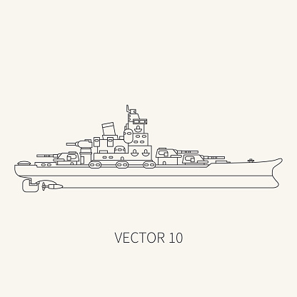

Sobre
Sou uma estudante da UNESP Rio Claro, em Bacharelado de Ciência da Computação. Fluente em inglês e com espanhol básico
Meus interesses na área são diversos pois gosto de experimentar diferentes linguagens e tecnologias para não me limitar. No momento estou me aprimorando em C/C++, Python e Kotlin pois tenho diversos projetos pessoais que acredito que serão bem implementados com estas linguagens. Espero poder incluir estes projetos logo nesta página, além de melhorar a experiência da mesma!
Meu TCC do curso técnico foi relacionado com microcontroladores e automação, a proposta era desenvolver um simples sistema de controle e manutenção de "blocos" hidropônicos, para permitir a produção de alimentos em diversas escalas com baixa interferência manual. O sistema físico não teve muito desenvolvimento durante o período determinado de desenvolvimento, mas a pesquisa efetuada sobre sistemas hidropônicos e microcontroladores teve um ótimo avanço, que me rendeu muito conhecimento que usei em diversas partes depois daquele momento.
Tenho experiência profissional com diversos microcontroladores, trabalhei brevemente com automação automotiva, conexão bluetooth, eletrônica e desenvolvimento de interface de usuário.
Experiência profissional:
- FITec – Estagiária
- Início em setembro de 2018 – Finalizado em novembro de 2019
Pesquisa e desenvolvimento em microcontroladores em C, incluindo conexão bluetooth para transporte de grandes dados, sistema temporizador para placas com muitas funções assíncronas, sistema de organização de funções e alarmes em tais placas, desenvolvimento front-end em Angular para página web e desenvolvimento back-end em Java
Educação:
- Colégio Técnico de Campinas – COTUCA, Campinas – Técnico em Informática
- Finalização em dezembro 2018
- Universidade Estadual Paulista – Unesp, Rio Claro – Bacharelado em Ciência da Computação
Atividades Extracurriculares:
- Iniciação Científica na área de Letras – PIBIC EM
- completado em agosto 2017
“EXPERIÊNCIA DO LEITOR PARA O JORNALISMO MÓVEL”
- Membro do jornal organizado pelos estudantes – “Conexão Cotuca”
Desenvolvimento Wordpress
- Curso de Mandarim – Módulo 1 – COTUCA
- Finalizado em dezembro 2016
- Curso básico de Italiano – Colégio da Vila
- Finalizado em dezembro 2014
Linguagens:
- C/C++
- Java
- Kotlin
- C#/.NET
- Python
- Delphi
- Bash
- SQL
Controle de versão:
Fora da área:
- tenho duas cachorras chamadas Leia e Luuna
- gosto de me exercitar, antes da pandemia na forma de levantamento de peso mas atualmente na forma de calistenia
- gosto muito de jogos estratégicos, onde a habilidade dentro do jogo é determinada pela agilidade de pensamento e habilidade de prever futuras situações
- sou administradora de um servidor no Discord de 1500 pessoas que participam de eventos em grupos
- sempre busco me envolver e me informar o máximo possível sobre os eventos atuais e desenvolvimentos tecnológicos que possam ajudar as pessoas
- alguns interesses menores envolvem jardinagem, marcenaria, desenhar etc
Projetos
Alguns projetos desenvolvidos ou em desenvolvimento de minha autoria!

Batalha Naval(Java)
Jogo de batalha naval desenvolvido durante meu período no COTUCA, a "inteligência artificial" seleciona blocos aleatórios então a capacidade de perder está de acordo com o gerador aleatório de número do computador.

wakeonlan
Exemplo em java da funcionalidade "wake-on-lan".
UDPServerExample
Exemplo desenvolvido para a aula de Programação em redes no COTUCA.

Administrador de servidor Discord(Python)
Projeto em desenvolvimento de bot para automatizar funções administrativas em diversos servidores. Algumas funções devem ser incluídas como: associação de títulos, reforço de regras(ban e warn) e respostas automatizadas.
Contato
Obrigada por acessar meu recentemente retomado portfolio! Com o tempo poderá ser visto acréscimos a esta página, de acordo com o avanço das minhas habilidades e envolvimento na carreira.
Se você deseja entrar em contato comigo pode me encontrar das seguintes formas:


(19)97105-4503
marinabarbosa@protonmail.com